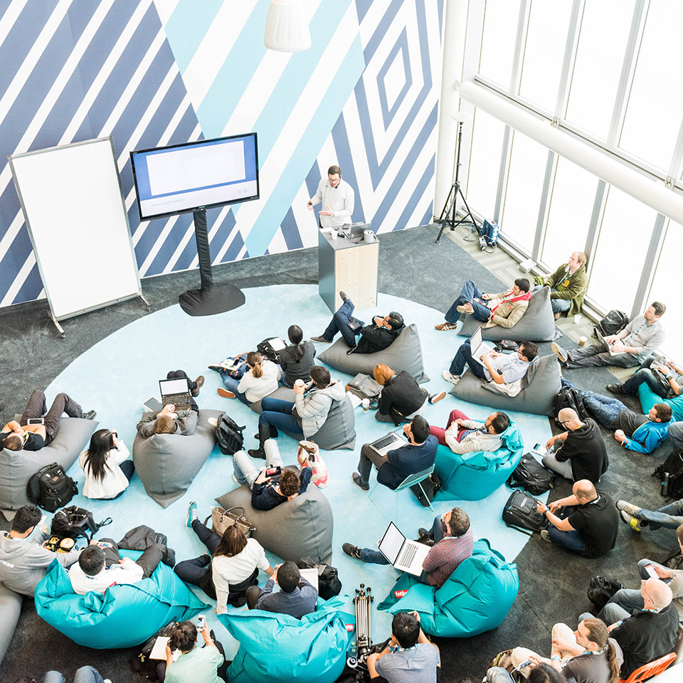
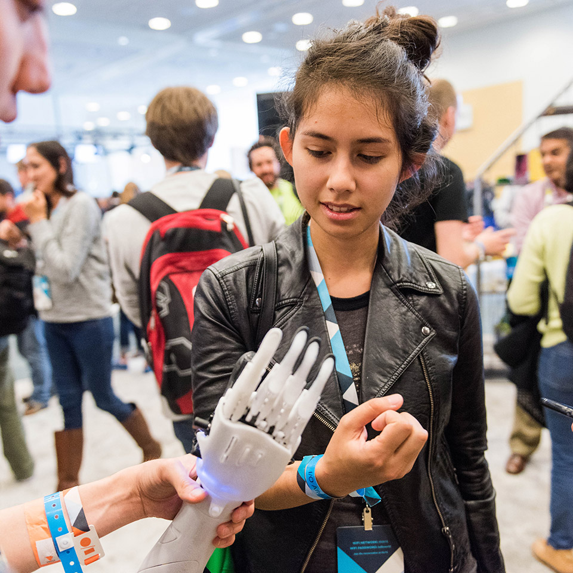

<link rel="import" href="../bower_components/neon-animation/animations/scale-up-animation.html">
<link rel="import" href="../bower_components/neon-animation/animations/scale-down-animation.html">
<link rel="import" href="../bower_components/iron-icons/social-icons.html">

<dom-module id="card-event">
    <template>
        <style>
            :host {
                display: block;
            }

            iron-pages {
                width: 100%;
                height: 200px;
            }

            .fixable-size {
                max-width: 100%;
                max-height: 100%;
            }

            .paper-card-0 {
                background: #2196F3;
                color: #fff;
            }

            .paper-card-0 a {
                color: #fff;
                text-decoration: none;
            }

            .paper-card-0 .card-content {
                padding: 0;
            }

            .paper-card-0 .card-actions {
                border-top: 0;
            }

            #dialog-share {
                border-radius: 2px;
            }

            .share {
                position: relative;
                /*width: 600px;*/
                padding: 24px;
            }

            .share .title {
                color: #00bcd4;
                font-size: 14px;
                font-weight: 700;
                text-align: center;
                text-transform: uppercase;
            }

            .share iron-icon[icon="social:share"] {
                width: 10px;
            }

            .share .share-button {
                text-align: center;
                padding-top: 5px;
            }

            .share .share-article {
                text-align: center;
                padding-top: 5px;
                color: #546E7A;
                font-weight: 500;
                font-size: 16px;
                word-wrap: break-word;
                overflow-wrap: break-word;
                line-height: normal;
            }

            .share a {
                color: #00bcd4;
            }

            .btn-share {
                display: inline-flex;
                margin: auto;
                padding-left: 20px;
                padding-right: 20px;
            }
        </style>
        <iron-pages id="images" selected="0">
            <div></div>
            <div></div>
            <div></div>
            <div></div>
            <div></div>
        </iron-pages>
        <paper-card id="card-event" elevation="1" animated-shadow="true" class="white"
                    style="width: 100%">
            <div class="card-content">
                <video typeof="video/mp4" autoplay style="max-width: 100%; max-height: 100%"
                       src="../resource/hashtag-800.mp4"></video>
            </div>
            <div class="card-actions">
                <section style="display: inline-flex;" onclick="clickDialogHandler(event)">
                    <paper-button data-dialog="dialog-share">SHARE</paper-button>
                    <paper-dialog id="dialog-share" entry-animation="scale-up-animation"
                                  exit-animation="scale-down-animation" with-backdrop>
                        <section class="share">
                            <p class="title">
                                <span><iron-icon icon="social:share"></iron-icon>Share this event</span>
                            </p>
                            <h4 class="share-article">Google I/O is for developers—the creative coders who are building
                                what’s next.</h4>
                            <div class="share-button">
                                <div class="btn-share">
                                    <social-media-icons icon="twitter" new-tab
                                                        href="https://twitter.com/share?text=Google I/O 2016 brings together developers for an immersive.&url=https://events.google.com/io2016/?utm_source=100dayproject.org"></social-media-icons>
                                </div>
                                <div class="btn-share">
                                    <social-media-icons icon="googleplus"></social-media-icons>
                                </div>
                                <div class="btn-share">
                                    <social-media-icons icon="facebook" size="32"></social-media-icons>
                                </div>
                            </div>
                        </section>
                    </paper-dialog>
                </section>

                <paper-button><a href="https://events.google.com/io2016/faq?utm_source=100dayproject.org"
                                 target="_blank">Learn more</a></paper-button>
                <iron-icon id="more_info" icon="icons:arrow-upward" title="more info"
                           style="float:right; cursor: pointer;"></iron-icon>
                <iron-collapse id="more-info" style="width:100%;">
                    Google I/O is for developers—the creative coders who are building what’s next. Together we’ll
                    explore the latest in tech, mobile, and beyond.
                </iron-collapse>
            </div>
        </paper-card>

    </template>
    <script>
        "use strict";
        Polymer({
            is: 'card-event',
            listeners: {
                'more_info.tap': '_toggle'
            },
            _toggle: function () {
                var moreInfo = document.getElementById('more-info');
                var iconButton = Polymer.dom(event).localTarget;
                iconButton.icon = moreInfo.opened ? 'icons:arrow-upward'
                        : 'icons:arrow-downward';
                moreInfo.toggle();
            }
        });
    </script>
</dom-module>